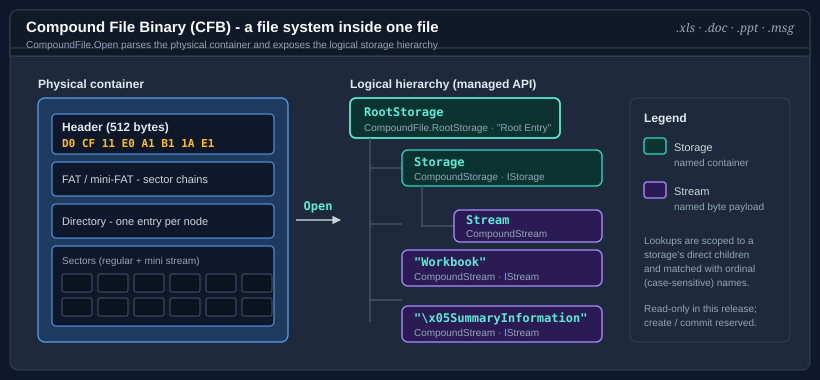

CompoundStorage Class
Definition
Represents a storage within a compound file - a named container of child storages and streams - and provides navigation over its immediate children.
public sealed class CompoundStorage- Inheritance
-
CompoundStorage
- Inherited Members
- Extension Methods
Remarks

This type is the managed counterpart of the COM IStorage interface. The root storage and every nested storage
are represented by the same type; the root is distinguished by an RootStorage value
on its Stat. All lookups are scoped to a storage's direct children and compared case-insensitively
using the compound-file name relationship, so streams that share a name under different storages remain distinct.
When the owning file is opened for writing (see Create(Stream, bool, CompoundBuildOptions)), the mutation members (CreateStorage(string), CreateStream(string), Delete(string), and Rename(string, string)) stage edits in memory; the destination is written only when Commit() is called. On a read-only storage those members throw InvalidOperationException.
using Bodu.IO.Compound;
using CompoundFile file = CompoundFile.OpenRead("message.msg");
foreach (CompoundEntryInfo info in file.RootStorage.EnumerateEntries())
Console.WriteLine($"{info.EntryType}: {info.Name} ({info.Length} bytes)");
if (file.RootStorage.TryOpenStorage("__attach_version1.0_#00000000", out CompoundStorage? attachment))
{
foreach (CompoundEntryInfo stream in attachment.EnumerateStreams())
Console.WriteLine($"attachment stream: {stream.Name}");
if (attachment.TryOpenStream("__substg1.0_3707001F", out CompoundStream? data))
using (data)
data.CopyTo(Console.OpenStandardOutput());
}Properties
CanWrite
Gets a value indicating whether this storage stages edits for a writable compound file.
public bool CanWrite { get; }Property Value
ClassId
Gets or sets the class identifier (CLSID) recorded on this storage's directory entry.
public Guid ClassId { get; set; }Property Value
Remarks
The root storage's CLSID is the conventional file-type discriminator for OLE2-based document formats. The setter stages the value on a writable file; it is written to the destination by Commit(). Per MS-CFB §2.6.1 only storage entries carry a CLSID - stream entries are always written with a zero CLSID.
Exceptions
- InvalidOperationException
Thrown on set when the compound file is read-only.
CreationTime
Gets or sets the creation timestamp recorded on this storage's directory entry.
public DateTimeOffset? CreationTime { get; set; }Property Value
- DateTimeOffset?
The creation time, or null when none is recorded.
Remarks
The value is never stamped automatically - a storage created through the edit surface carries no timestamps unless the caller sets them, keeping byte-identical re-saves possible.
Exceptions
- InvalidOperationException
Thrown on set when the compound file is read-only.
ModifiedTime
Gets or sets the last-modification timestamp recorded on this storage's directory entry.
public DateTimeOffset? ModifiedTime { get; set; }Property Value
- DateTimeOffset?
The last-modification time, or null when none is recorded.
Remarks
Surfaces the same value Stat exposes as LastModifiedTime. It is never stamped automatically - Commit() leaves timestamps untouched, keeping byte-identical re-saves possible; callers who want a modification time set it explicitly.
Exceptions
- InvalidOperationException
Thrown on set when the compound file is read-only.
Name
Gets the name of the storage as stored in the directory.
public string Name { get; }Property Value
- string
The storage name; the root storage carries the conventional name
Root Entry.
Parent
Gets the parent storage that contains this storage.
public CompoundStorage? Parent { get; }Property Value
- CompoundStorage
The parent CompoundStorage, or null when this is the root storage.
Stat
Gets the metadata snapshot for this storage.
public CompoundEntryInfo Stat { get; }Property Value
- CompoundEntryInfo
A CompoundEntryInfo describing the storage.
StateBits
Gets or sets the user-defined state bits recorded on this storage's directory entry.
public int StateBits { get; set; }Property Value
- int
The opaque state-bits value;
0when none is recorded.
Exceptions
- InvalidOperationException
Thrown on set when the compound file is read-only.
Methods
CreateStorage(string)
Creates a new child storage with the specified name and stages it for the next commit.
public CompoundStorage CreateStorage(string name)Parameters
namestringThe name of the storage to create.
Returns
- CompoundStorage
The newly created child CompoundStorage.
Exceptions
- ArgumentNullException
Thrown when
nameis null.- InvalidOperationException
Thrown when the compound file is read-only.
- ArgumentException
Thrown when a child with the same name already exists.
CreateStream(string)
Creates a new, empty child stream with the specified name and returns a writable cursor over it.
public CompoundStream CreateStream(string name)Parameters
namestringThe name of the stream to create.
Returns
- CompoundStream
A writable CompoundStream positioned at the start; dispose it when finished.
Exceptions
- ArgumentNullException
Thrown when
nameis null.- InvalidOperationException
Thrown when the compound file is read-only.
CreateStream(string, ReadOnlyMemory<byte>)
Creates a new child stream with the specified name and content and stages it for the next commit.
public void CreateStream(string name, ReadOnlyMemory<byte> content)Parameters
namestringThe name of the stream to create.
contentReadOnlyMemory<byte>The payload to store in the stream.
Exceptions
- ArgumentNullException
Thrown when
nameis null.- InvalidOperationException
Thrown when the compound file is read-only.
- ArgumentException
Thrown when a child with the same name already exists.
Delete(string)
Removes the child storage or stream with the specified name from the staging tree.
public bool Delete(string name)Parameters
namestringThe name of the child to remove.
Returns
Exceptions
- ArgumentNullException
Thrown when
nameis null.- InvalidOperationException
Thrown when the compound file is read-only.
EnumerateEntries()
Enumerates the metadata of every direct child of this storage, in directory order.
public IEnumerable<CompoundEntryInfo> EnumerateEntries()Returns
- IEnumerable<CompoundEntryInfo>
A sequence of CompoundEntryInfo for the child storages and streams.
EnumerateStorages()
Enumerates the direct child storages of this storage, in directory order.
public IEnumerable<CompoundStorage> EnumerateStorages()Returns
- IEnumerable<CompoundStorage>
A sequence of child CompoundStorage objects.
EnumerateStreams()
Enumerates the metadata of the direct child streams of this storage, in directory order.
public IEnumerable<CompoundEntryInfo> EnumerateStreams()Returns
- IEnumerable<CompoundEntryInfo>
A sequence of CompoundEntryInfo for the child streams.
OpenStorage(string)
Opens the child storage with the specified name.
public CompoundStorage OpenStorage(string name)Parameters
namestringThe storage name, compared using the case-insensitive compound-file relationship.
Returns
- CompoundStorage
The matching child CompoundStorage.
Exceptions
- ArgumentNullException
Thrown when
nameis null.- CompoundStreamNotFoundException
Thrown when no child storage with the given name exists.
OpenStream(string)
Opens a read-only cursor over the child stream with the specified name.
public CompoundStream OpenStream(string name)Parameters
namestringThe stream name, compared using the case-insensitive compound-file relationship.
Returns
- CompoundStream
A CompoundStream positioned at the start of the payload; dispose it when finished.
Exceptions
- ArgumentNullException
Thrown when
nameis null.- CompoundStreamNotFoundException
Thrown when no child stream with the given name exists.
OpenStream(string, FileMode, FileAccess)
Opens the child stream with the specified name using BCL-style FileMode and
FileAccess semantics, mirroring System.IO.Packaging.PackagePart.GetStream.
public CompoundStream OpenStream(string name, FileMode mode, FileAccess access)Parameters
namestringThe stream name, compared using the case-insensitive compound-file relationship.
modeFileModeThe file mode applied to the named stream.
accessFileAccessThe access level; write access requires a writable compound file.
Returns
- CompoundStream
A CompoundStream positioned per
mode; dispose it when finished.
Exceptions
- ArgumentNullException
Thrown when
nameis null.- NotSupportedException
Thrown when
accessrequests write access on a read-only compound file.- CompoundStreamNotFoundException
Thrown when no child stream with the given name exists and
modedoes not create one.
Rename(string, string)
Renames the child storage or stream with the specified name.
public void Rename(string oldName, string newName)Parameters
Exceptions
- ArgumentNullException
Thrown when
oldNameornewNameis null.- InvalidOperationException
Thrown when the compound file is read-only.
- KeyNotFoundException
Thrown when no child named
oldNameexists.- ArgumentException
Thrown when a child named
newNamealready exists.
TryOpenPropertySet(string, out OlePropertySet)
Attempts to open and parse the named child stream as an OLE property set.
public bool TryOpenPropertySet(string name, out OlePropertySet propertySet)Parameters
namestringThe property-set stream name (for example,
\x05SummaryInformation).propertySetOlePropertySetWhen this method returns true, the parsed OlePropertySet; otherwise null.
Returns
Exceptions
- ArgumentNullException
Thrown when
nameis null.- CompoundFileFormatException
Thrown when the stream is not a well-formed property set.
TryOpenStorage(string, out CompoundStorage)
Attempts to open the child storage with the specified name.
public bool TryOpenStorage(string name, out CompoundStorage storage)Parameters
namestringThe storage name, compared using the case-insensitive compound-file relationship.
storageCompoundStorageWhen this method returns true, the matching child storage; otherwise null.
Returns
Exceptions
- ArgumentNullException
Thrown when
nameis null.
TryOpenStream(string, out CompoundStream)
Attempts to open a read-only cursor over the child stream with the specified name.
public bool TryOpenStream(string name, out CompoundStream stream)Parameters
namestringThe stream name, compared using the case-insensitive compound-file relationship.
streamCompoundStreamWhen this method returns true, a CompoundStream over the matching child stream; otherwise null.
Returns
Exceptions
- ArgumentNullException
Thrown when
nameis null.
TryOpenStream(string, FileMode, FileAccess, out CompoundStream)
Attempts to open the child stream with the specified name using BCL-style FileMode and FileAccess semantics.
public bool TryOpenStream(string name, FileMode mode, FileAccess access, out CompoundStream stream)Parameters
namestringThe stream name, compared using the case-insensitive compound-file relationship.
modeFileModeThe file mode applied to the named stream.
accessFileAccessThe access level; write access requires a writable compound file.
streamCompoundStreamWhen this method returns true, a CompoundStream over the matching child stream; otherwise null.
Returns
Exceptions
- ArgumentNullException
Thrown when
nameis null.- NotSupportedException
Thrown when
accessrequests write access on a read-only compound file.
WritePropertySet(string, OlePropertySet)
Serializes a property set into the named child stream, creating or replacing it in the staging tree.
public void WritePropertySet(string name, OlePropertySet propertySet)Parameters
namestringThe property-set stream name (for example,
\x05SummaryInformation).propertySetOlePropertySetThe property set to serialize.
Remarks
The write counterpart of TryOpenPropertySet(string, out OlePropertySet): the set is serialized through its MS-OLEPS layout and staged as the named stream, replacing any existing payload. The edit is persisted only when Commit() is called.
Exceptions
- ArgumentNullException
Thrown when
nameorpropertySetis null.- InvalidOperationException
Thrown when the compound file is read-only.
- CompoundFileSerializationException
Thrown when the stream name is not valid or the set carries a property value that cannot be encoded.
Applies to
| Product | Versions |
|---|---|
| .NET | 8, 10 |